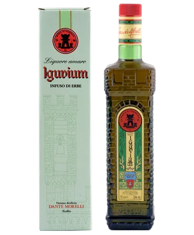

Liquore amaro · infuso di erbe
Iguvium
Nasce da un'antica ricetta, patrimonio della distilleria: un infuso di erbe selezionate e una lavorazione accurata gli danno un gusto forte e personale. Digestivo per eccellenza: liscio, fresco o nel caffè.
- 35% Vol.
- cl. 70
- cl. 25
- anche in astuccio